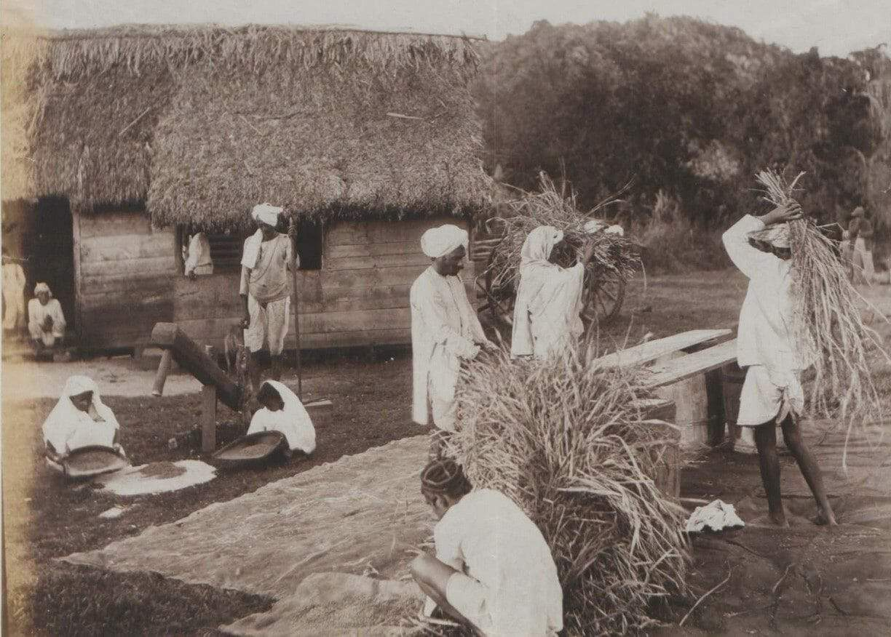
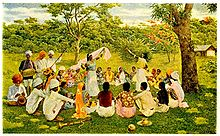

As someone whose family is from the Caribbean, it’s no secret that Indian culture has a heavy influence on Caribbean culture, especially in places like Trinidad and Tobago (my country!) and Guyana, where almost the majority of the population is Indian or mixed with both Indian and African-descent. From meals like daal and rice, roti, curry chicken, and more, as well as many other aspects like Diwali and Hinduism being practiced, many parts of Indian culture have been well-preserved for over a century. This is true for a variety of other countries too, like Fiji (located in Oceania), Suriname (located in South America), and South Africa.
It’s estimated that more than 30 million people who are Indian or of Indian descent live in countries outside of India. But how did these many of these populations even get there in the first place, and why?
This spread of Indians to different countries is referred to as a diaspora. Many diasporas are created due to immigration, imperialism, globalization, or displacement. However, some of the first instances of diasporas occurred in the 19th century. In 1833, the British raj formally abolished slavery in 1833, leading to many formerly enslaved workers leaving the Caribbean plantations they worked on. With a large shortage of workers in their colonies, the British government began a system of indentured labor with Indian workers. Indentured servitude is a type of labor where a worker performs labor for a period of time, unpaid, in exchange for another type of repayment, such as to forgive debt.
These workers often agreed to work in exchange for housing, (questionable) medical care, reliable employment, and other perks; some even continued coming back for employment for years when their contract was up. But the start of work for many Indians was rough. Although some voluntarily left their homes back in India, many were coerced or even kidnapped, and a large percentage did not fully understand the terms of their contracts. Oftentimes they were subjected to labor that was much more physically demanding and intense than they originally believed. However, most of them were in no position to reject the work, as they were often peasants that had no better opportunities waiting for them at home.
This indentured servitude was sometimes thought of as “another form” of slavery. Similar to what African slaves were forced to endure during the frightening Middle Passage, many Indian laborers fell ill on their journeys over the sea, and some even died. When they arrived, they were unfortunately met with poverty, homelessness, disease, famine, and more. A lot of laborers also reported assaults and other mistreatments from their employers but were punished unfairly.
As more and more Indians moved to these colonies, they began to be called “coolies” by European plantation owners, which was a derogatory word that stemmed from the Hindi word, kuli, meaning day laborer, and possibly the Urdu word quli, meaning slave.
In the face of many independence and nationalistic movements around the globe, anticolonial resistance began to spread among the British colonies. Leaders such as Mahatma Gandhi began shining light on the indentured servitude system that was in place in these areas, and the practice was eventually banned in 1917. But these countries went to a great extent to keep their employees laboring. Some were offered small wages if they renounced their free passage back to their home countries; others were offered land to settle on once their contract ended. Overall, around two-thirds of the initial number of Indians brought over to the Caribbean remained there, and their impact is obvious.
There are so many similarities between India and the Caribbean today! One of the biggest influences can be seen through our food. For example, roti, one of the most popular foods in Trinidad and Guyana, is renowned for being an Indian creation. Dhal puri, a type of roti filled with yellow split peas, is almost identical to the Indian version, filled with lentils. Achar, a tangy combination of pickled vegetables or fruits, inspired the Trinidadian innovation of pickled mango!
Despite the Europeans’ large influence on religion, after Christianity, Hinduism and Islam together make up almost 30% of the top religions practiced in Trinidad. In Fiji, Guyana, and Suriname they make up over 30%. In some areas, they even still speak Hindi or another closely related dialect. (Side note: can’t forget to mention the ever-popular debate of: is it curry chicken, or chicken curry?!)
It is undeniable that the Indian populations of former British colonies have had a great influence on the history of each country. It’s no surprise that Indian culture is still alive and thriving in every one. Whether you are of Indian descent or not, it is important to acknowledge the great contributions that Indian indentured laborers (as well as other cultures) have given to our countries!
